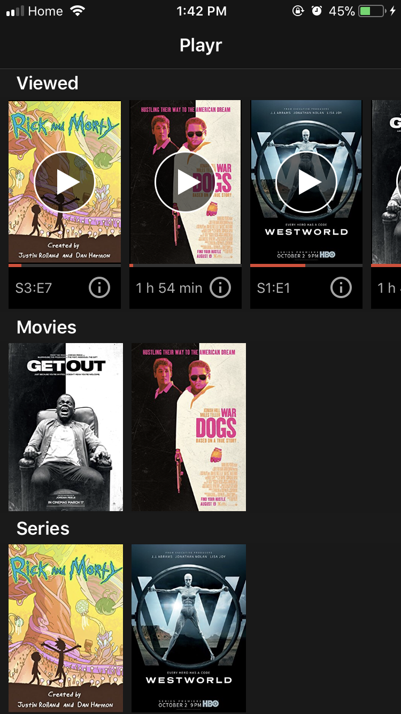
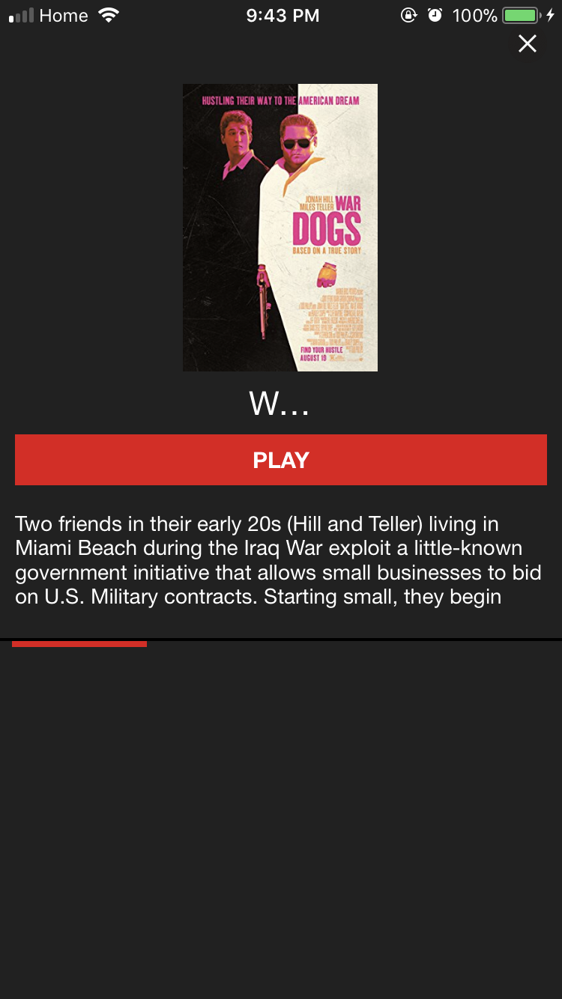
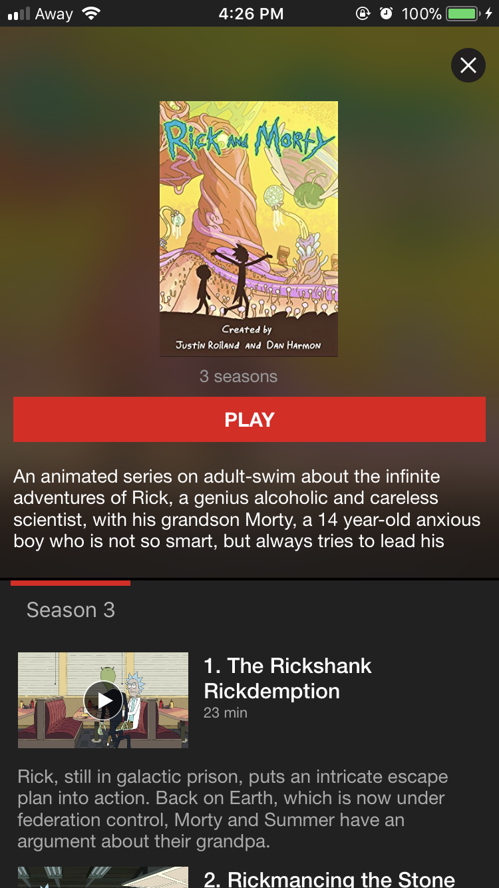
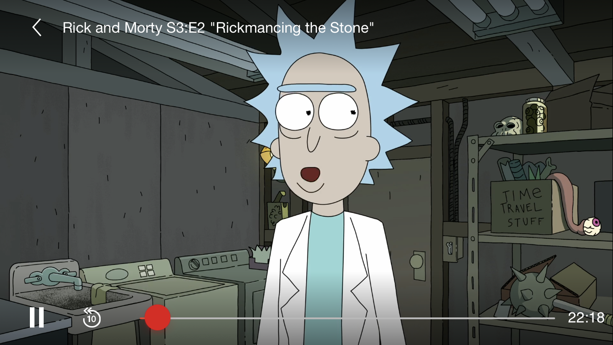

The Idea
Making an app that can stream videos from your local server
The Outcome
--
You might have been in this situation before: you have videos/movies on your laptop that you want to stream on your app. One solution could be setting up a simple webapp that parses your directory and compiles a simple html page with the video wrapped in a video tag. This might work, but only with .mp4 format videos. This does not solve the case when you have an .mkv or a .wmv format video (which are quite common). My solution was to create an iOS app using VLCKit as a framework to display most if not all video formats.
Disclaimer: this is NOT a tutorial on how to illegally obtain movies. I do
not condone torrenting movies. Everything showed in the screenshots is mock data
pulled from imdb for demonstrative purposes only.

Development Process
- I used Swift to make the app, and VLCKit library to display videos. VLCKit was bridged from Objective-C to Swift. Its API takes either the video from the local storage of the device or a URL
- I decided to design a server that will hold all URLs to the videos (as well as metadata such as the title of the movie and its description). I made the server in PHP using the MySQL database.
- Apache was already available on raspberry pi, so setting up the local server was pretty straight forward
- PHP would have REST endpoints that a) return the list of videos/movies b) return a URL to the video/movie and c) return any data associated with the video/movie (title, description, length etc..)
- I also wrote a shell script that would run anytime anyone would copy/move a video to the server. The shell script sends the name of the folder/video that was inserted to a python script. The python script uses an IMDB API and the folder name to determine any data about the movie (such as episode titles, movie length, description) and it inserts it into the MySQL database. The database also tracks when each video has been stopped so it can be resumed from that timestamp.
- The UI has been inspired by the one and only Netflix™
Screenshots



